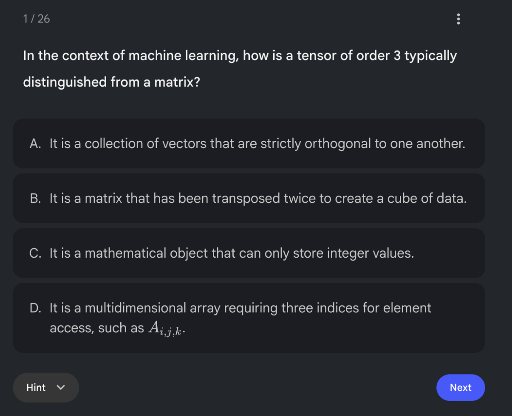
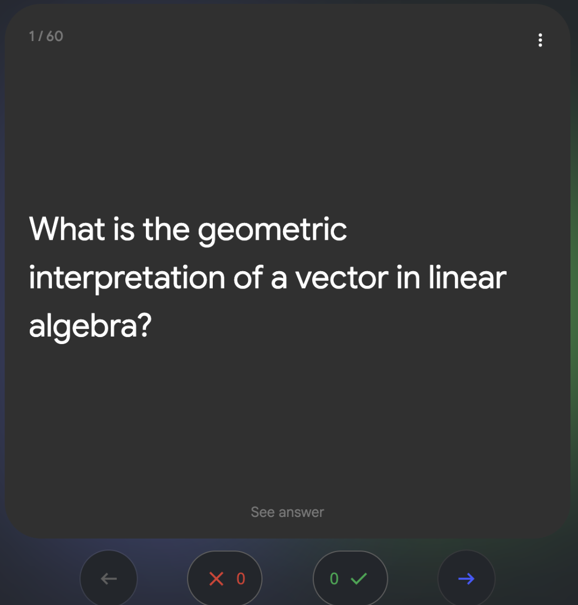
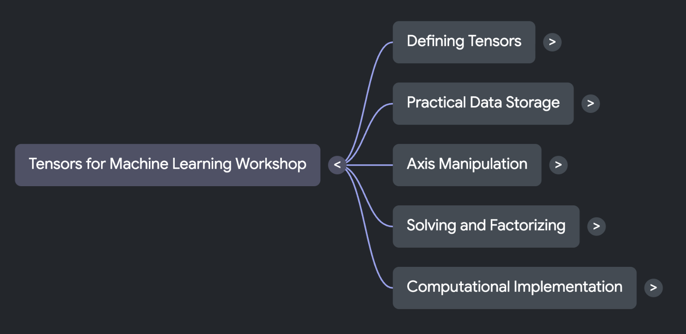

Review the workshop with these NotebookLM materials, generated 2026-09-07. They have not been checked by a person. Use the handbook to check answers.
The whole day in one picture
Four ideas connect the sections. This diagram was drawn by hand.
One-minute shorts
About a minute per idea. Opens in NotebookLM.
Infographics
View in NotebookLM:
Listen
Listen to two hosts explain the main ideas.
Audio overview — 2 minutes. Listen in NotebookLM.
Test yourself
Practice at your own pace. For the live quizzes, use Kahoot.
Open a preview to try the activity in NotebookLM.

Self-check quiz
26 multiple-choice questions.
Find what to review.
Opens in NotebookLM. Preview of the interactive activity.

Flashcards
60 cards on linear algebra and tensors.
Practice recalling key ideas.
Opens in NotebookLM. Preview of the interactive activity.
The map
Open a preview to try the activity in NotebookLM.

Mind map
Five branches connect the workshop’s ideas.
Expand a branch to explore.
Opens in NotebookLM. Preview of the interactive activity.